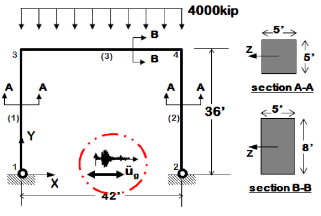

In this example, a simple 2D portal frame model is used to verify the
results of EE-UQ app. The model is a linear elastic single-bay,
single-story model of a reinforced concrete portal frame, as shown in
Fig. 3.1.1. The analysis of this model considers both
gravity loading and lateral earthquake loading due to the El Centro
earthquake (Borrego Mountain 04/09/68 0230, El Centro ARRAY 9, 270).
The original model and ground motion used in this example were
obtained from Example 1b on the OpenSees website,
and were modified to scale the ground motion record from gravity
units, g to the model units, \(\frac{in}{s^2}\). Files for this example are
included with the release of the software and are available in the
Examples folder in a subfolder called PortalFrame2D.

Fig. 3.1.1 Two-dimensional portal frame model subjected to gravity and earthquake loading.
To introduce uncertainty in the model, both mass and Young’s modulus
are assumed to be normally distributed random variables with means and
standard deviation values shown in lblRV; In this
example, the model will be sampled with the Latin Hypercube sampling
method using both EE-UQ app and a Python script
(PortalFrameSampling.py) and response statistics from both
analyses are compared.
Table 3.1.1 Uncertain parameters defined in the portal frame model
Uncertain Parameter
Distribution
Mean
Standard Deviation
Nodal Mass (m [kip])
Normal
5.18
1.0
Young’s Modulus (E [ksi])
Normal
4227.0
500.0
Modeling uncertainty using EE-UQ app can be done using the following steps:
Start EE-UQ app, click on the simulation tab (SIM) in the left bar to open a building simulation model. Click on choose button in the input script row:
Choose the model file Portal2D-UQ.tcl from the PortalFrame2D example folder.
In the list of Clines Nodes edit box, enter 1,3. This indicates to EE-UQ app that nodes 1 and 3 are the nodes used to obtain EDPs at different floor levels (i.e. base and first floor).
Click on the event tab (EVT) in the left bar to open the earthquake event specification tab, select Multiple Existing for loading Type. Click on the add button to add an earthquake event. Then click on the choose button to select the event file.
Choose the event file (BM68elc.json) for the El Centro earthquake provided in the portal frame 2D example folder.
Now select the random variables panel (RV) from the left bar, change the random variables types to normal and set the mean and standard deviation values of the floor mass and Young’s modulus. Notice that EE-UQ app has automatically detected parameters defined in the OpenSees tcl file using the pset command and defined them as random variables.
A verification script (Listing 1) for propagating the uncertainty was
developed in Python and is included in the example folder. The script
creates 1000 samples for both Young’s modulus and mass values
using Latin Hypercube sampling, then modifies the OpenSees
model, runs it and stores the output. After all the model samples are
processed, the script will compute and output the mean and standard
deviation values of the peak floor acceleration and peak drift.
importnumpyasnpimportosimportshutilimportsubprocessfrompyDOEimport*fromscipy.stats.distributionsimportnorm#Setting number of samplesnSamples=1000#Creating latin hyper cube designsdesign=lhs(2,samples=nSamples)#Sampling Young's Modulus and MassESamples=norm(loc=4227,scale=500.0).ppf(design[:,0])mSamples=norm(loc=5.18,scale=1.0).ppf(design[:,1])#Initializing output arraysPFA=[]PID=[]#Reading OpenSees Modelwithopen("Ex1b.Portal2D.EQ.tcl","r")asportalFrameFile:portalFrameModel=portalFrameFile.read()#Looping through the samples and creating modified modelsforiinrange(nSamples):sampleName=str(i+1)if(os.path.exists(sampleName)andos.path.isdir(sampleName)):shutil.rmtree(sampleName)os.mkdir(sampleName)shutil.copy('BM68elc.acc',sampleName)#Modifying the model using sample E and m valueswithopen(sampleName+'/Ex1b.Portal2D.EQ.tcl',"w+")asmodifiedFile:modifiedModel=portalFrameModel.replace('pset floorMass 5.18','pset floorMass '+str(mSamples[i]))modifiedModel=modifiedModel.replace('pset E 4227','pset E '+str(ESamples[i]))modifiedFile.write(modifiedModel)#Running OpenSeessubprocess.Popen("OpenSees Ex1b.Portal2D.EQ.tcl",shell=True,cwd=sampleName).wait()#Reading Peak Floor Accelerationwithopen(sampleName+'/PFA.out',"r")aspfaFile:PFA.append(float(pfaFile.readlines()[2]))#Reading Peak Floor Accelerationwithopen(sampleName+'/PID.out',"r")aspidFile:PID.append(float(pidFile.readlines()[2]))#Cleaning upshutil.rmtree(sampleName)#Printing resultsprint'Mean Peak Floor Acceleration: ',np.mean(PFA)print'Peak Floor Acceleration Std. Dev: ',np.std(PFA)print'Mean Peak Drift: ',np.mean(PID)print'Peak Drift Std. Dev.: ',np.std(PID)
This section verifies the results produced for the portal frame
by EE-UQ app against the results of running the same
problem using the Python script. Running the uncertainty
quantification problem locally using EE-UQ and using the Python script
produces the results shown in the figures below. The results (mean and standard deviation
values of EDPs) for both are compared in the table below and, as seen, are in good
agreement.